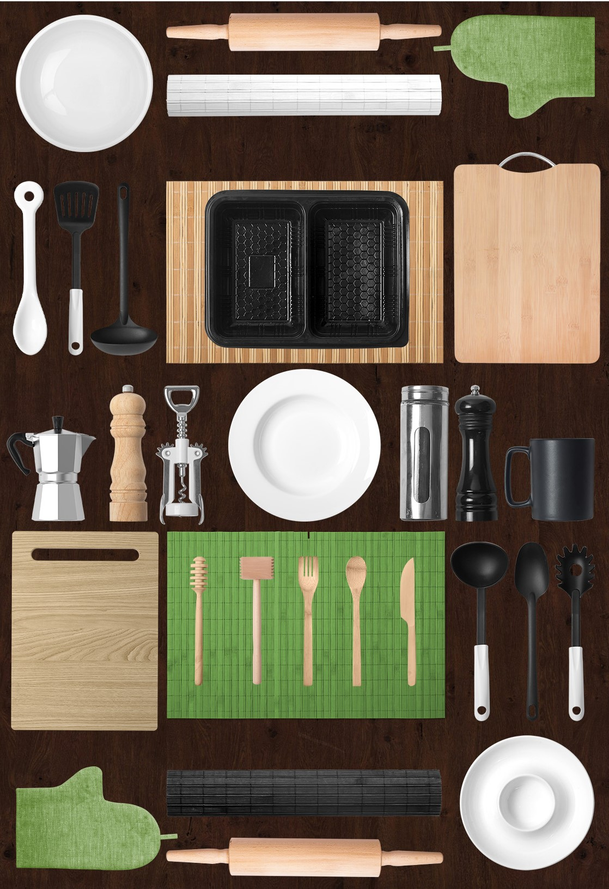

[Recuperato].png)
Layout
Layout e Tecniche di Visualizzazione si concentra sulla progettazione visiva e grafica. Il software che ho acquisito in questa materia è Adobe In Design. Come le precedenti materie essa è sia pratica che soprattutto teorica, oltre aver realizzato esercizi, nella teoria, il docente ci ha spiegato il mondo Tipografico e le varie tipologie di stampa. Una volta aver realizzato e consegnato gli esercizi entro le date stabilite, il progetto finale richiedeva un Portfolio con all’interno i progetti che ho seguito durante il corso, con le immagini e descrizioni accanto, una volta finito il portfolio venne stampato nella tipografia Arti Grafiche Leonardi di Catania, con formato A5 (21 x 14,8 cm).
Collage
Il collage è una tecnica per creare opere d'ogni tipo sovrapponendo e incollando carte, fotografie, oggetti, ritagli di giornale o di rivista
Knolling
Consiste nella disposizione di oggetti diversi. Posizionati ad angolo retto per poi essere fotografati dall’alto. Questo permette di dare un look simmetrico e piacevole, facendo in modo di vedere tutti gli oggetti in una singola fotografia
My Minimal Selfie
Si tratta di un ritratto illustrato tramite delle forme geometriche. Questo prende ispirazione da un famoso artista Milanese: Francesco Poroli.
Solo versi
Solo versi è una mostra che abbiamo ottenuto all'Accademia di Belle Arti di Catania, progettata dal professore Gianluca Santoro, nonché docente di tecniche di visualizzazione. Tema di questo progetto è il suono. Attraverso l'aiuto grafico e i miei colleghi progettiamo la nostra interpretazione del verso, tramite un testo e l'aggiunta di un QR code.
clicca qui per ascoltareAnnunci Brutti
Questo progetto consiste nel leggere o visionare dei determinati annunci o volantini realizzati da persone che purtroppo mostrano il loro messaggio attraverso carta e penna, il che fanno sembrare dei veri e propri annunci brutti, alcuni mostrano errori di ortografia altri invece sono vuoti, mostrando al pubblico che effettivamente manca un po di grafica. Cosi il docente ci lascia questo compito ovvero, sistemare questi piccoli errori in modo di dare un senso al loro messaggio che vogliono dare al pubblico. L’esercizio si suddivide in tre progetti: 1. Utilizzare il testo + forme. 2. Utilizzare il testo + forme + immagine. 3. Re-Design di cover di album musicali. Nel mio caso ho scelto“AFFITTASI” un annuncio che interessa soprattutto ai studenti e lavoratori, quindi i primi due è di dare un senso grafico, mentre il terzo consiste nel prendere ispirazione ad un album musicale ma con l’unione dell’annuncio.